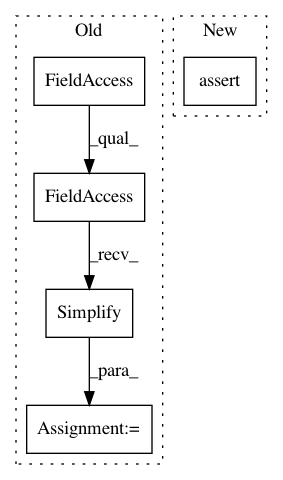

d9cecdf50141cc56eec9be928063a81baba31d92,tests/python/unittest/test_te_schedule_bound_inference.py,,test_bound_fusesplit1,#,126
Before Change
for k in range(1, 6):
vars = tvm.runtime.convert({split1: tvm.tir.const(i, "int32"), l: tvm.tir.const(j, "int32"), xo.var: tvm.tir.const(k, "int32")})
comp_ext = tvm.tir.ir_pass.Simplify(tvm.tir.ir_pass.Substitute(bounds[A1.op.axis[0]].extent, vars)).value
exp_ext = tvm.tir.ir_pass.Simplify(tvm.tir.ir_pass.Substitute(expected_extent, vars)).value
assert(comp_ext == exp_ext)
assert(tvm.tir.ir_pass.Simplify(bounds[A1.op.axis[1]].extent - l).value == 0)
After Change
bounds = tvm.te.schedule.InferBound(s)
assert isinstance(bounds, tvm.container.Map)
idxdiv = tvm.tir.indexdiv
tvm.testing.assert_prim_expr_equal(
bounds[A1.op.axis[0]].min, idxdiv(xo * split1, l))
expected_extent = (idxdiv((xo + 1) * split1 - 1, l) - idxdiv(xo * split1, l) + 1)
for i in range(1, 6):
for j in range(1, 6):
In pattern: SUPERPATTERN
Frequency: 3
Non-data size: 5
Instances
Project Name: apache/incubator-tvm
Commit Name: d9cecdf50141cc56eec9be928063a81baba31d92
Time: 2020-04-20
Author: tqchen@users.noreply.github.com
File Name: tests/python/unittest/test_te_schedule_bound_inference.py
Class Name:
Method Name: test_bound_fusesplit1
Project Name: apache/incubator-tvm
Commit Name: d9cecdf50141cc56eec9be928063a81baba31d92
Time: 2020-04-20
Author: tqchen@users.noreply.github.com
File Name: tests/python/unittest/test_tir_buffer.py
Class Name:
Method Name: test_buffer_access_ptr_offset
Project Name: apache/incubator-tvm
Commit Name: d9cecdf50141cc56eec9be928063a81baba31d92
Time: 2020-04-20
Author: tqchen@users.noreply.github.com
File Name: tests/python/unittest/test_tir_buffer.py
Class Name:
Method Name: test_buffer_vload